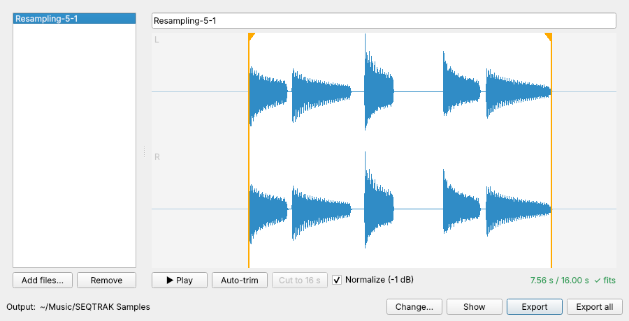
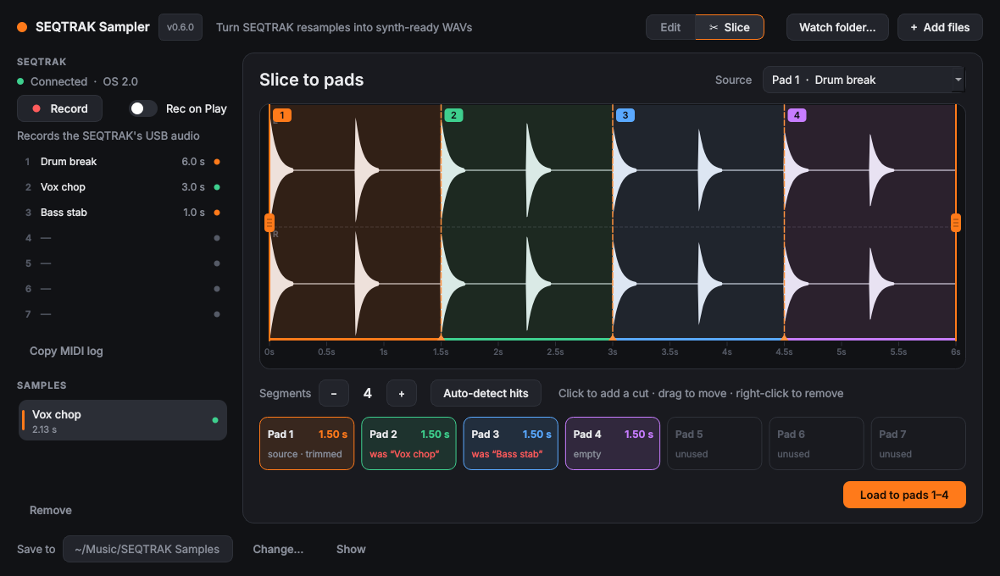

Record the SEQTRAK over USB, trim its sampler pads right on the device, slice one sample across several pads in a click, and export clean stereo WAVs for its synth tracks.
Not affiliated with or endorsed by Yamaha Corporation.

Trimming a pad by ear is fiddly, a sample can only live on one pad, and getting a resample onto a synth engine meant re-recording it in a DAW.
Cut a break into hits or a phrase into chops, and every piece lands on its own pad, trimmed and ready to play.
The pad map shows what each pad will hold before anything changes, and Undo puts every pad back, including ones that had other samples.

Plug the SEQTRAK in over USB and the app reads its sampler pads, plays them, and writes trims back using Yamaha's documented MIDI messages.
The project's seven sampler pads with names and lengths. A new resample appears on its own while the app is in front.
Click a pad, drag the handles, click Apply. The pad's start and end change on the SEQTRAK, lined up to within a few milliseconds.
Step a pad back to how it was, as far as before the app first touched it. Trimming never deletes audio, and the history survives restarts.
Capture the SEQTRAK's USB audio straight into the app. Rec on Play starts and stops with the SEQTRAK's transport.
.Y3S exports from the SEQTRAK app load as soon as they land, and every edit can be saved as a WAV right away.
Drag a sample from the list straight onto the SEQTRAK app's import to put it on a synth track. No file dialogs.
A meter shows the selection against the SEQTRAK's limit. Cut to 16 s trims it with a fade before it fails on import.
44.1 kHz, 16-bit stereo, read losslessly from .Y3S files. Optional normalize to -1 dB and short fades so edges don't click.
Batch-convert .Y3S files with the bundled y3s2wav tool. No dependencies beyond Python.
Free and open source, currently v0.6. The builds aren't code-signed yet, so your OS will ask once before opening them (see the FAQ).
Unzip, move SEQTRAK Sampler to Applications, then right-click it and choose Open the first time.
Download .zipUnzip anywhere and run SEQTRAK Sampler.exe. If SmartScreen appears, choose More info → Run anyway.
Download .zipNeeds Python 3.9+. The command-line tool has no dependencies; the app needs PySide6.
# desktop app pip install "seqtrak-sampler[gui] @ git+https://github.com/rechandler/seqtrak_sampler" seqtrak-sampler # command line y3s2wav *.Y3S -o wavs/ --normalize
Plug it into your computer with a USB cable. The SEQTRAK panel in the app's sidebar shows Connected and lists the pads. The app reads pads using the SEQTRAK's USB MIDI Transmit System Exclusive setting, which is off by default; if the panel says SysEx is off, click Enable.
On Windows only one app can use the SEQTRAK's MIDI port at a time. Close the SEQTRAK app while you trim or slice pads. Recording works either way, since it only uses the USB audio.
Only when you ask it to. Apply to pad and Load to pads change pad start and end points, names, and which recording a pad plays. They never delete audio, and Undo puts pads back. Reading .Y3S files and exporting WAVs never touches the device or the SEQTRAK app's data.
No. Every sliced pad plays the source pad's recording, trimmed to its own segment, so no new audio is recorded. Pads that held other samples keep those recordings on the SEQTRAK, which is how Undo brings them back.
Not directly: the SEQTRAK's MIDI connection doesn't carry audio. Export the WAV, or drag it from the app onto the SEQTRAK app's import, and it lands on a synth track.
In the SEQTRAK app, open Project / Sound Manager, go to Sounds, right-click the sound and choose Export. Point the app's Watch folder at where you export them and they load on their own.
That's the SEQTRAK's own maximum sample length. The app warns you and blocks the export until the selection fits, or you can press Cut to 16 s to trim it with a fade-out.
The builds aren't signed with a paid Apple or Microsoft developer certificate yet. On macOS, right-click the app and choose Open. On Windows, click More info, then Run anyway. You can also build it yourself from source.
With the MIDI messages in Yamaha's SEQTRAK Data List. The .Y3S file layout is documented in FORMAT.md.